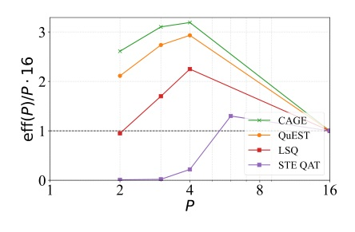
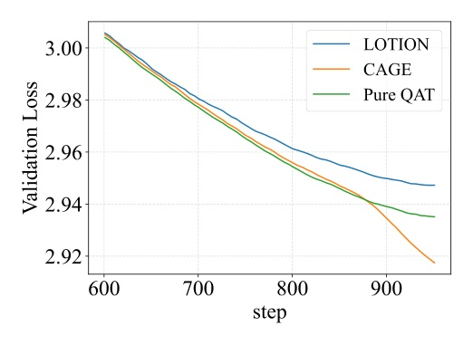

Curvature-Aware Gradient Estimation
讓 low-bit QAT 的更新，真的朝量化格點收斂
不要只穿透量化梯度；也要把參數拉回量化支撐集。
CAGE 以 residual e = x - Q(x) 補正 STE/AdamW，在幾乎不改成本的前提下縮小 low-bit accuracy gap。
CAGE 的核心不是「多一個 regularizer」，而是讓 optimizer update 直接遵守 Pareto direction。
量化 residual 成為明確更新項；藉由既有 Adam statistics 或 decoupled post-step，避免顯式 Hessian 的成本。
訓練採 simulated quantization/dequantization + standard-precision matmul。
| Method | 100M | 800M | eff(P) |
|---|---|---|---|
| CAGE + HT | 18.944 | 12.182 | 0.797 |
| QuEST + HT | 19.123 | 12.482 | 0.733 |
| BF16 reference | 17.923 | 11.698 | 1.000 |

| Setting | QuEST ms/iter | CAGE ms/iter |
|---|---|---|
| 100M W4A4, no HT | 101.6 +/- 1.7 | 101.1 +/- 1.8 |
| 430M W4A4, no HT | 282.7 +/- 3.1 | 283.1 +/- 3.0 |

重要限制：LOTION 當時沒有官方 implementation，論文比較使用作者自行 reimplementation。
將 QAT 視為「能否達到 Pareto stationarity」，比把 STE 當固定近似器更可操作。
它把 quantizer 的 residual 變成 optimizer 可用的訊號；而不是只在 forward pass 接受量化誤差。
“CAGE is derived from a multi-objective view of QAT that balances loss minimization with the quantization constraints.”
CAGE 從多目標 QAT 出發，平衡 loss 最小化與量化約束。Abstract p.1
“W3A3 CAGE is Pareto-superior to W4A4 QuEST!”
作者聲稱：3-bit weights-and-activations 的 CAGE 在 Pareto 前緣上勝過 4-bit QuEST。§4.3 p.9
明日主題：AI Agent 框架 / 多模態系統